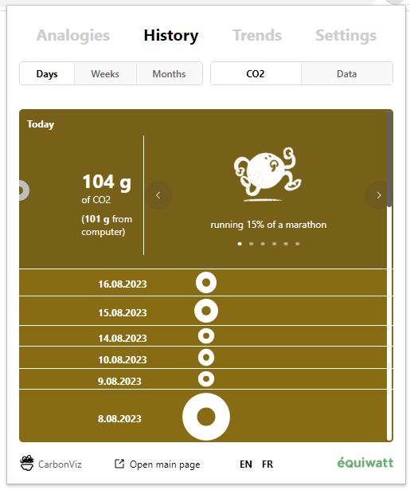
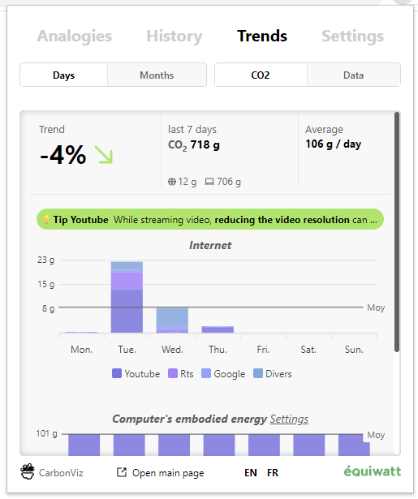
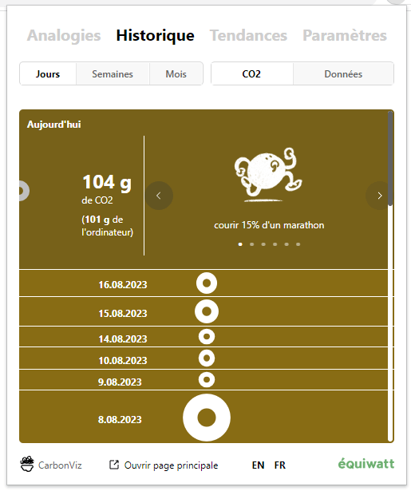
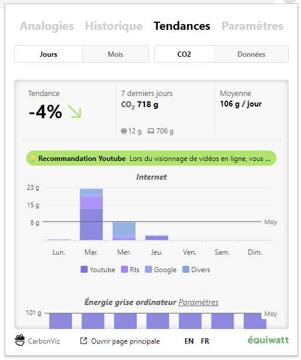

CarbonViz has had a big update!
We listened to user feedback and made changes to be more useful, clear,
and actionnable.
We’ve retired the bubbles and now show you a strip that compares data
transfer from your browsing to concrete activities like hours of
audio streaming.
It is now automatically hidden if you need to interact with the web page.
The extension window has got a big overhaul as well. Check your impact
over time in the History tab and find finer details and tips in Trends.


CarbonViz a une nouvelle mise à jour d'envergure!
Nous avons écouté les commentaires des utilisateurs et avons apporté des modifications pour être plus pratique, plus clair,
et vous aider à suivre votre impact et le diminuer.
Nous avons supprimé les bulles d'activités et vous montrons maintenant une bande qui compare
le transfert de données de votre navigation à des activités concrètes telles que des heures de streaming audio.
Celle-ci se cache maintenant automatiquement si vous devez intéragir avec la page web.
La fenêtre d'extension a également été remaniée.
Vérifiez votre impact au fil du temps dans l'onglet Historique et trouvez des détails plus précis et des conseils dans les Tendances.

